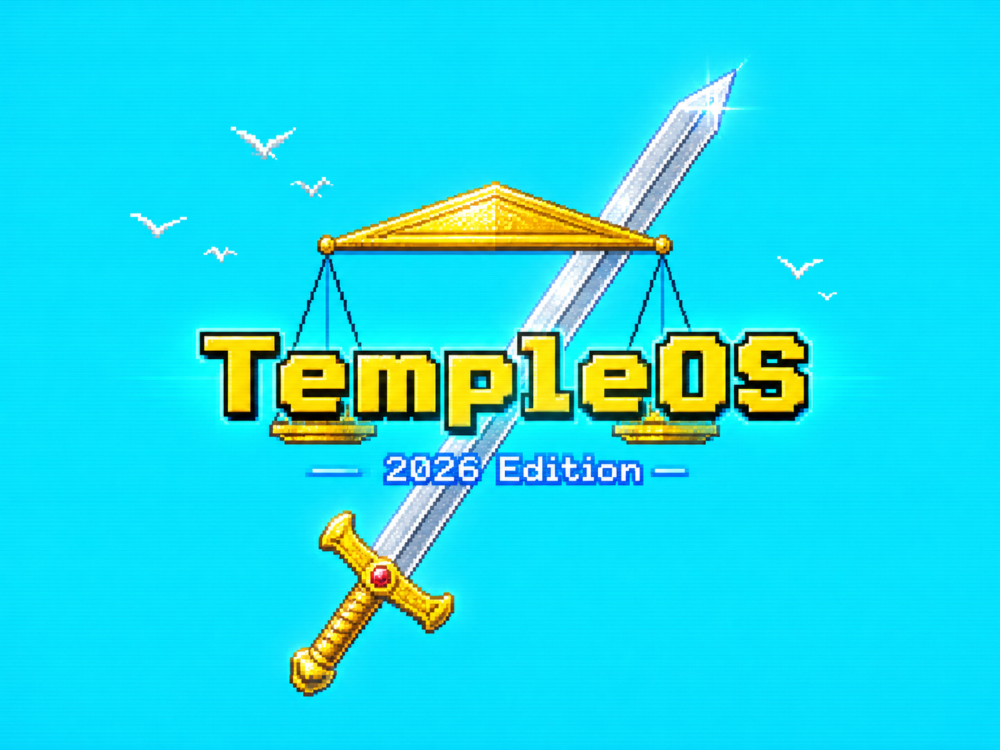

TempleOS 2026 — 2026 Edition
로직은 원본, 그래픽은 미래 — 그를 추모하며
Terry A. Davis의 HolyC 게임과 도구를 2026년의 감각으로 다시 빚다
Terry A. Davis의 HolyC 게임과 도구를 2026년의 감각으로 다시 빚다
In memory of Terry A. Davis · 1969–2018 · creator of TempleOS
⏺ public domain · offline · no accounts · no ads · no telemetry
✦ SOAVIZ Labs · Experiment #001 — 다음 실험이 궁금하면 팔로우 / Follow for what's next
"An idiot admires complexity, a genius admires simplicity." — Terry A. Davis
SOAVIZ Labs Experiment #001 · a respectful tribute, not an official continuation